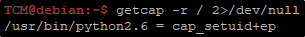

https://www.hackingarticles.in/linux-privilege-escalation-using-capabilities/
https://mn3m.info/posts/suid-vs-capabilities/
https://medium.com/@int0x33/day-44-linux-capabilities-privilege-escalation-via-openssl-with-selinux-enabled-and-enforced-74d2bec02099
Traditional Linux processes are divided into 2 categories: Privileged Processes and Unpriviliged Processes.
As an example: root has id 0 (priviliged), other users something different than 0 (unpriviliged)
Privileged Processes bypass the kernel check, Unpriviliged Processes are subject to full checking.
From 2.2 Kernel, Linux divided the priviliged associated with root in distinct units.
Those units are called Capabilities.
Can be indipendently enables and disabled, are per-thread attribute.
Capabilities are more secure than SUID (there is a transition to them)
We can hunt for Capabilities with:
getcap -r / 2>/dev/null

(Capability of SUID + EP stands for every capability is enabled)